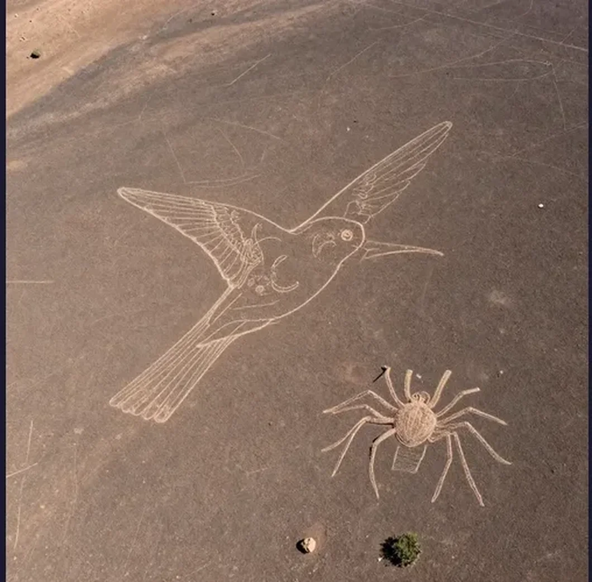

The Nazca Lines: Ancient Desert Geoglyphs That Can Only Be Fully Seen From the Sky

Imagine standing in the dry, flat desert of southern Peru. This land is called the Pampa de Jumana. All around you, spread over nearly 400 square miles, lies one of the most astonishing achievements of the ancient world. You cannot see it. The ground is too flat, and the pictures are too big.
There are over 800 straight lines, and some stretch as far as 30 miles across the desert floor. There are over 300 shapes, such as triangles, trapezoids, rectangles, and spirals. And there are over 70 huge figures of animals and plants. They include a hummingbird, a spider, a monkey with a spiral tail, a killer whale, a condor, a dog, a pelican, hands, a tree, and flowers.
The largest figures are more than 1,200 feet across. That is as long as the Empire State Building is tall. Some of the straight lines run all the way to the horizon and beyond. They are so straight that they would challenge modern surveying tools.
A pre-Columbian culture made these designs. That means a people who lived in the Americas before the Europeans arrived. They had no way to see their work from above. They had no machines and no written language. They made the lines between 500 BCE and 500 CE, more than 1,500 years before the airplane was invented.
For centuries, nobody on the ground could see the full pictures. Only in the 20th century, when passenger flights began, did people see the true size of what the Nazca people had made.
The Nazca Lines have inspired wonder, obsession, and plenty of wild guesses. Were they an astronomical calendar? The German mathematician Maria Reiche spent 40 years arguing so. Were they sacred paths for religious processions, as many archaeologists now believe? Were they messages to the gods, a desperate plea for rain in one of the driest deserts on Earth?
Or, as the bestselling author Erich von Däniken famously claimed, were they landing strips for spacecraft from other planets? The lines have attracted astronauts, mathematicians, archaeologists, and pseudoscientists, which means people who claim to be scientists but do not follow real scientific methods.
The lines became a UNESCO World Heritage Site in 1994. New figures are still being found, most recently with the help of artificial intelligence and drone surveys. Yet after decades of research, no single theory fully explains why the Nazca people put so much effort into designs they could never see from the ground.
The Nazca Lines were in plain sight for thousands of years. But the desert is so big and so flat that the patterns were almost invisible from the ground. The first scholar to notice them was the Peruvian archaeologist Toribio Mejía Xesspe. He saw the lines while walking through the desert in the 1920s.
From the ground, they looked like faint trails across the desert floor. They were curious, but they did not seem important. Then, in the 1930s and 1940s, passenger flights began. Pilots flying over southern Peru started to report huge geometric patterns and animal shapes cut into the desert below.
The breakthrough came in 1941. An American professor named Paul Kosok, from Long Island University, visited the Nazca desert. He wanted to study ancient irrigation systems, the channels that bring water to crops.
On June 22, one day after the winter solstice, Kosok was standing at the end of one of the long straight lines. The winter solstice is the shortest day of the year in that part of the world. The sun began to set. He looked up and saw that the line pointed directly at the setting sun. The match was too exact to be an accident.
Kosok was stunned. He called the 310-square-mile stretch of desert “the largest astronomy book in the world.” He devoted himself to studying how the lines lined up with the sky.
His work caught the attention of a German mathematician named Maria Reiche. She would spend the rest of her life, more than 50 years, studying, mapping, and protecting the Nazca Lines. Reiche lived in a small house near the desert. That way she could protect the lines from careless visitors and building work.
She mapped every line and figure she could find. She often worked alone in the desert for weeks at a time. She published her findings in books and scientific papers.
Her theory was that the lines matched the positions of the sun, moon, and stars at certain times of the year. Later research has questioned some of her specific alignments. But her work to preserve and record the lines is beyond measure. She pressed the Peruvian government to protect the site. Her efforts helped the lines win UNESCO World Heritage status in 1994.
The way the Nazca Lines were made is very simple. That makes it even more remarkable that they lasted 2,000 years. The surface of the Pampa de Jumana is covered with dark reddish-brown pebbles, coated with iron oxide. Below this layer lies lighter, yellowish-white earth.
The Nazca people made their designs by removing the dark pebbles from the surface. This showed the lighter soil underneath. The contrast between the dark top layer and the light layer below makes the lines visible. No digging was needed. The lines are only a few inches deep.
The lines survive because of one of the most extreme climates on Earth. The Nazca Desert is one of the driest places on the planet. It gets less than one inch of rain per decade. There is almost no rain, very little wind to wear things away, and stable conditions created by the shape of the land. Together these kept the lines in good shape for over two thousand years.
Researchers have been fascinated for decades by one question. It is not how the lines were made, since the method is simple. It is how the Nazca people got such exact results on such a huge scale without seeing the designs from above.
Experiments have given a likely answer. Researchers showed that the Nazca people probably made small models of their designs first. Then they used sight lines and stakes to scale the designs up to full size. Workers put stakes at key points and used long ropes or strings to keep lines straight and curves even. In this way a team could copy a small design onto the desert floor with great accuracy.
This method has been tested. Modern researchers used only stakes, string, and the same pebble-removal method. They successfully recreated Nazca-style figures at full size. No aliens were needed. It took human cleverness, careful planning, and a lot of hard work.
The biggest debate is not how the lines were made but why. What purpose could be worth the huge effort of carving hundreds of figures and thousands of lines into one of the harshest deserts on Earth?
The earliest and most famous theory is the calendar. It says the lines matched the sun, moon, and stars at certain times of the year. They would have worked as a huge calendar for tracking solstices, equinoxes, and the seasons. An equinox is a day when day and night are equal in length. Paul Kosok saw one line point at the solstice sunset, and that started the theory. Maria Reiche spent decades mapping such alignments. But later statistical studies show that many of the alignments could be chance. Not all the lines match an event in the sky.
The leading theory among archaeologists today was championed by scholars like Johan Reinhard. It says the lines were sacred paths for religious ceremonies and processions. People would have walked the straight lines on pilgrimages. The animal figures would have been symbols or markers along the way. As evidence, archaeologists found pieces of pottery, offerings, and ritual objects along the lines.
For a people living in one of the driest deserts, perhaps the most convincing theory is a water cult. This means the lines were part of a religion that asked the gods for rain. Many of the lines lead to or point toward places where people could reach underground water. The spider may stand for a water creature. The hummingbird and other figures may have been linked with fertility and water.
In this view, the lines were not practical tools. They were desperate prayers, huge pleas for the most precious thing in a harsh desert.
In 1968, the Swiss author Erich von Däniken published Chariots of the Gods?. It became one of the bestselling archaeology books of all time. It was also one of the most disliked by professional archaeologists. Von Däniken said the Nazca Lines were landing strips and signals for spacecraft from other planets.
Archaeologists have firmly rejected this idea, for several reasons. The lines are far too shallow for any aircraft to land on, since they are only a few inches deep. The “runways” are not flat or smoothed. There is no sign of any technology beyond what the Nazca people had. And the theory wrongly assumes that native peoples could not do clever engineering without outside help.
The real achievement is more remarkable than von Däniken’s fantasy. Ordinary people with simple tools and great organization made works of art so huge that they can be seen from space.
The Nazca Lines are not a closed chapter. New figures keep turning up, often found with new technology that Maria Reiche could never have imagined. Japanese researchers from Yamagata University have found dozens of unknown figures in satellite images. They include a 98-foot-long killer whale, a dancing human figure, and various geometric shapes.
In 2024, researchers announced 168 new geoglyphs. A geoglyph is a large design made on the ground. They were found with artificial intelligence and drone surveys. This greatly widened the known extent of the Nazca works.
The AI system was trained to spot possible geoglyphs in sharp satellite images. Then human researchers checked the findings on the ground. Many of the new figures are smaller than the classic animal designs. They may come from an earlier period of Nazca culture.
Nearby are the Palpa Lines, on the hillsides next to the Nazca desert. They are just as fascinating but less well known. They show human forms, such as standing figures, warriors, and human-like designs. They add useful background on the geoglyph-making peoples of the region.
Even with UNESCO protection, the lines face threats. Mining has crept into the desert. Road building has damaged some figures, and the Pan-American Highway already cuts through part of the site. Tourism adds pressure.
In 2014, a Greenpeace protest caused anger around the world. Activists laid out a large message near the hummingbird figure. They left footprints and disturbed the delicate desert surface. Peru’s deputy culture minister called the damage “a slap in the face to every Peruvian.” The event showed how easily the lines can be harmed. It also showed the tension between protecting the site and raising public awareness.
The Nazca Lines are a puzzle for archaeologists. They are a message so large that it can only be seen from the sky. Yet the people who made it had no way to see it from the sky.
They are both simple and clever. They were made by moving rocks. Yet they were made with a precision and size that still fills people with awe 2,000 years later.
Were they a calendar? A temple? A prayer for rain? A vision of a shaman, a healer who speaks with spirits? A shared art project on the grandest scale imaginable? The answer may be all of these, or none of them. The Nazca people left no written records to explain their purpose. The lines themselves stay silent.
What is certain is that they are a great achievement of human civilization. Hundreds, perhaps thousands, of people worked over centuries in one of the harshest places on Earth. They made something beautiful and mysterious. The Nazca Lines are still speaking. We just have not learned their language yet.
References & Further Reading
📚 Recommended Reading: The Nasca Lines by Anthony F. Aveni (on Amazon) — As an Amazon Associate, we earn from qualifying purchases.
Editorial note: reconstructions are continuously revised as imaging and inscription studies improve. See our Editorial Policy.